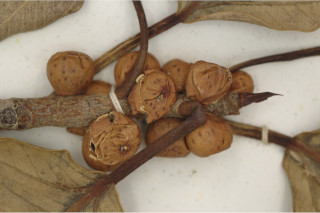
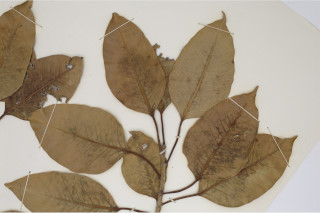
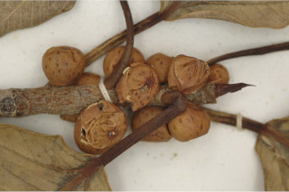
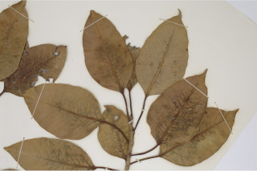

Medium sized trees, often epiphytic, to 20 m tall with aerial roots.
20 ಮೀ. ಎತ್ತರದವರೆಗಿನ,ಬಿಳಿಲು ಬೇರುಗಳ ಸಮೇತವಿರುವ ಮಧ್ಯಮ ಗಾತ್ರದ ಮರಗಳಾದ ಈ ಸಸ್ಯ ಹಲವು ವೇಳೆ ಅಪ್ಪು ಸಸ್ಯಗಳಾಗಿ ಕಂಡುಬರುತ್ತವೆ.
Medium sized trees, often epiphytic, to 20 m tall with aerial roots.
மிதமான உயரமுடைய மரமாக, பொரும்பாலும் ஒட்டு செடியாக ஆரம்பிக்கின்றன, 20 மீ. உயரம் வரை வளரக்கூடியது தொங்கு வேர்களுடையவை.
Bark greenish-grey, smooth; blaze yellow;
ತೊಗಟೆ ಹಸಿರು ಮಿಶ್ರಿತ ಬೂದು ಬಣ್ಣದಲ್ಲಿದ್ದು ನಯವಾಗಿರುತ್ತವೆ;ಕಚ್ಚು ಮಾಡಿದ ಜಾಗ ಹಳದಿ ಬಣ್ಣದಲ್ಲಿರುತ್ತದೆ.
Bark greenish-grey, smooth; blaze yellow;
மரத்தின் பட்டை பச்சை-சாம்பல் நிறமானது, வழவழப்பானது; உள்பட்டை மஞ்சள் நிறமானவை;
Branchlets terete, glabrescent or puberulous, with annular scars.
ಕಿರುಕೊಂಬೆಗಳು ದುಂಡಾಗಿದ್ದು ಉದುರು ರೋಮಗಳಿಂದ ಅಥವಾ ಸೂಕ್ಷ್ಮ ಮೃದು ತುಪ್ಪಳದಿಂದ ಕೂಡಿರುತ್ತವೆ ಮತ್ತು ವಲಯಾಕಾರದ ಗುರುತುಗಳಿಂದ ಕೂಡಿರುತ್ತವೆ.
Branchlets terete, glabrescent or puberulous, with annular scars.
சிறியநுனிக்கிளைகள் குறுக்குவெட்டுத் தோற்றத்தில் வளையமானது, நுண்ணிய உரோமங்களுடையது அல்லது உரோமங்களற்றது, இலையடிச்செதில் உதிர்ந்ததால் உண்டாகும் வட்டவடுக்களுடையது.
Latex white, profuse.
ಜಿನುಗು ದ್ರವ ಬಿಳಿ ಬಣ್ಣದಲ್ಲಿದ್ದು ವಿಫುಲವಾಗಿರುತ್ತದೆ.
Latex white, profuse.
வெள்ளை நிற பால் அதிகளவு சுரக்கிறது
Leaves simple, alternate, spiral; stipules 2.5 cm long, lanceolate, caducous, leaving annular scar; petiole 1.5-5 cm long, canaliculate, glabrous; lamina 5-14 x 2.5-9 cm, broadly ovate or ovate - oblong, apex acuminate with blunt tip or acute, base acute-cuneate or rounded, margin entire, thick, cartilaginous, glabrous, coriaceous; midrib raised above; secondary_nerves 8-10 pairs, slender; tertiary_nerves reticulate, obscure.
ಎಲೆಗಳು ಸರಳವಾಗಿದ್ದುಪರ್ಯಾಯ ಮತ್ತು ಸುತ್ತು ಜೋಡನಾ ವ್ಯವಸ್ಥೆಯಲ್ಲಿರುತ್ತವೆ; ಕಾವಿನೆಲೆಗಳು 2.5 ಸೆಂ.ಮೀ.ವರೆಗಿನ ಉದ್ದವಿದ್ದು ಭರ್ಜಿಯ ಆಕಾರದಲ್ಲಿದ್ದು ವಲಯಾಕಾರದ ಗುರುತುಗಳನ್ನುಳಿಸಿ ಉದುರಿ ಹೋಗುತ್ತವೆ;ತೊಟ್ಟುಗಳು 1.5 -5 ಸೆಂ.ಮೀ. ಉದ್ದ ಹೊಂದಿದ್ದು ಕಾಲುವೆ ಗೆರೆ ಸಮೇತವಾಗಿರುತ್ತವೆ ಮತ್ತು ರೋಮರಹಿತವಾಗಿರುತ್ತವೆ;ಪತ್ರಗಳು 5 - 14 X 2.5 – 9 ಸೆಂ.ಮೀ. ಗಾತ್ರವಿದ್ದು ವಿಶಾಲ ಅಂಡ ಅಥವಾ ಅಂಡ - ಅಂಡವೃತ್ತದ ಆಕಾರದಲ್ಲಿದ್ದು , ಮೊಂಡಾದ ಅಥವಾ ಚೂಪಾದ ಅಗ್ರವನ್ನಳ್ಳ ಕ್ರಮೇಣ ಚೂಪಾಗುವ ತುದಿ,ಚೂಪು – ಬೆಣೆ ಅಥವಾ ದುಂಡಾದ ಬುಡವನ್ನು ಹೊಂದಿರುತ್ತವೆ, ಅಂಚು ನಯವಾಗಿರುತ್ತದೆ ,ಪತ್ರಗಳು ಮಂದವಾಗಿದ್ದು, ಮೆಲ್ಲೆಲುಬು ರೀತಿಯಲ್ಲಿದ್ದು ರೋಮರಹಿತವಾಗಿದ್ದು ತೊಗಲನ್ನೋಲುವ ಮೇಲ್ಮೈ ಹೊಂದಿರುತ್ತವೆ ಹಾಗೂ ಬುಡದಲ್ಲಿ 3 ಆಧಾರ ನಾಳಗಳ ಸಮೇತವಿರುತ್ತವೆ;ಮಧ್ಯ ನಾಳ ಮೇಲ್ಭಾಗದಲ್ಲಿ ಮೇಲೆದ್ದಿರುತ್ತದೆ; ಎರಡನೇ ದರ್ಜೆಯ ನಾಳಗಳು 8 ರಿಂದ 10 ಜೋಡಿಗಳಿದ್ದು ಸೂಕ್ಷ್ಮವಾಗಿರುತ್ತವೆ;ಮೂರನೇ ದರ್ಜೆಯ ನಾಳಗಳು ಜಾಲ ಬಂಧ ನಾಳ ವಿನ್ಯಾಸದಲ್ಲಿದ್ದು ಅಗೋಚರವಾಗಿರುತ್ತವೆ.
Leaves simple, alternate, spiral; stipules 2.5 cm long, lanceolate, caducous, leaving annular scar; petiole 1.5-5 cm long, canaliculate, glabrous; lamina 5-14 x 2.5-9 cm, broadly ovate or ovate - oblong, apex acuminate with blunt tip or acute, base acute-cuneate or rounded, margin entire, thick, cartilaginous, glabrous, coriaceous; midrib raised above; secondary_nerves 8-10 pairs, slender; tertiary_nerves reticulate, obscure.
இலைகள் தனித்தவை, மாற்றுஅடுக்கமானவை, சுழல் போன்று அமைந்தவை; இலையடிச்செதில் 2.5 செ.மீ. நீளமானது, ஈட்டி வடிவானது, எளிதில் உதிரக்கூடியது மற்றும் வட்டவடுக்களை ஏற்படுத்துகின்றன; இலைக்காம்பு 1.5-5 செ.மீ. நீளமானது, குறுக்குவெட்டுத் தோற்றத்தில் கேனாலிகுலேட், உரோமங்களற்றது; இலை அலகு 5-14 x 2.5-9 செ.மீ., அகன்ற முட்டை வடிவானது அல்லது முட்டை-நீள்சதுர வடிவானது, அலகின் நுனி அதிக்கூரியதுடன் அதன் முனை மழுங்கியது அல்லது கூரியது, அலகின் தளம் கூரியது-ஆப்பு வடிவானது அல்லது வட்டமானது, அலகின் விளிம்பு முழுமையானது, தடித்தவை, காதுமடல் எலும்பு போன்றவை (கார்ட்டிலொசினஸ்), உரோமங்களற்றது, கோரியேசியஸ்; மையநரம்பு மேற்புறத்தில் அலகின் பரப்பைவிட உயர்ந்து இருக்கும்; இரண்டாம் நிலை நரம்புகள் 8-10 ஜோடிகள், மெல்லியது; மூன்றாம் நிலை நரம்புகள் வலைப்பின்னல் போன்றவை, கண்களுக்கு புலப்படாது.
Inflorescence syconia, monoecious, axillary, subsessile, depressed globose; flowers unisexual occurs with in the inner wall of syconia.
ಪುಷ್ಪಮಂಜರಿ ಅಕ್ಷಾಕಂಕುಳಿನಲ್ಲಿರುವ ಸೈಕೋನಿಯ ರೀತಿಯವುಗಳಾಗಿದ್ದು ಗಂಡು ಮತ್ತು ಹೆಣ್ಣು ಹೂಗಳು ಒಂದೇ ಸಸ್ಯದಲ್ಲಿರುತ್ತವೆ , ಸೈಕೋನಿಯಗಳು ಉಪ-ತೊಟ್ಟು ಹೊಂದಿದ್ದು ಅದುಮಿದ ಗೋಳಾಕಾರದಲ್ಲಿರುತ್ತವೆ;ಹೂಗಳು ಏಕ ಲಿಂಗಿಗಳಾಗಿದ್ದು ಸೈಕೋನಿಯಾದ ಒಳಪ್ರಾಕಾರದಲ್ಲಿರುತ್ತವೆ.
Inflorescence syconia, monoecious, axillary, subsessile, depressed globose; flowers unisexual occurs with in the inner wall of syconia.
மஞ்சரி சைகோனியம், ஒரகம் கொண்டவை, இலைக்கோணங்களில் காணப்படுபவை, மிகச்சிறிய காம்புடையது, அழுத்தப்பட்ட கோள வடிவமானது; மலர்கள் ஓர் பாலானவை சைகோனியத்தின் உட்புறச்சுவற்றில் அமைந்தவை.
Syconium red or purple when ripe; achenes smooth.
ಸಂಯುಕ್ತ ಫಲ(ತಿರುಳುಳ್ಳ ಸಂಯುಕ್ತ ಫಲ) ಕಳೆತಾಗ ಕೆಂಪು ಅಥವಾ ಕೆನ್ನೀಲಿ ಬಣ್ಣ ಹೊಂದಿರುತ್ತದೆ; ಅಖೀನುಗಳು ನಯವಾಗಿರುತ್ತವೆ.
Syconium red or purple when ripe; achenes smooth.
சைகோனியம் கனியும் போது சிவப்பு நிறமானது அல்லது பர்புள்; சிற்றுலர்கனி (அக்கீன்) வழவழப்பானது.
 


